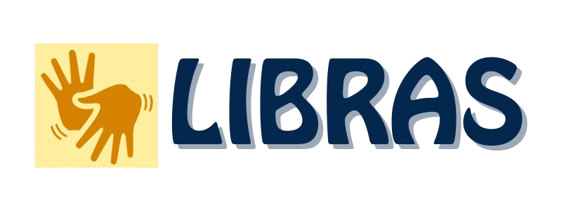

Libras é a Língua Brasileira de Sinais, usada por surdos e deficientes auditivos para se comunicarem. Assim como o português tem sua gramática, a Libras também tem suas próprias regras, expressões e sinais únicos! Curiosidade: Não é uma linguagem universal! Cada país tem sua própria língua de sinais.
Na Libras, o corpo inteiro "fala":
As mãos formam os sinais,
As expressões faciais mostram emoções,
A posição do corpo muda o significado!
Exemplo: Um mesmo sinal pode significar coisas diferentes dependendo da expressão facial usada!
Saber Libras é abrir portas para a inclusão e o respeito.
📚 Em muitas escolas e empresas, a Libras já é reconhecida e incentivada.